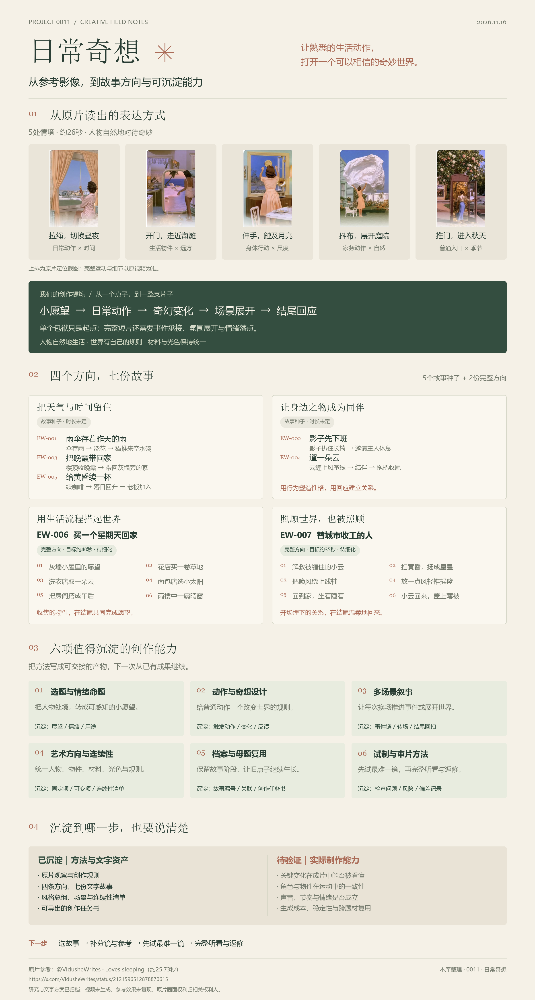

PROJECT 0011 / CREATIVE FIELD NOTES
把喜欢的效果，
变成下一次创作的起点。
从熟悉的生活动作出发，组织有巧思、有氛围、有承接的小故事。这里留下我们对原片的理解，整理四条方向、七份文字方案与六项可沉淀能力，帮助以后继续选题、分镜和试制。


接着怎样读
想理解方法：进入完整研究，依次看原片情境、创作原则和它对我们的具体价值。
想继续做故事：按阶段筛选七份档案，阅读场景、情绪、世界规则和难点，再导出创作任务书。
想扩成系列：沿天气与时间、物件同伴、生活流程搭世界、照顾与回应四个方向，替换人物、物件与场景。方法已整理，生成效果与稳定复用仍待实际验证。